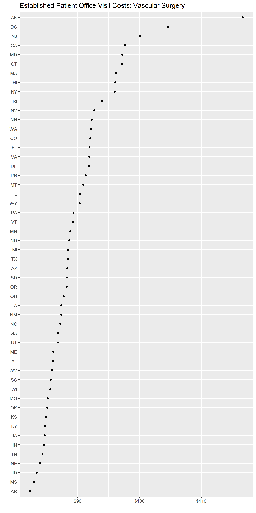
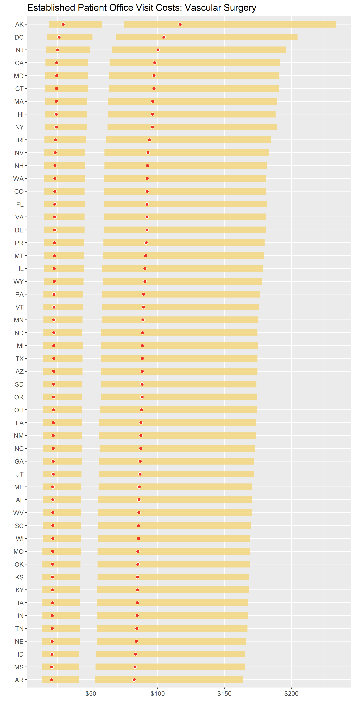

Installation
You can install the development version of costoffice from GitHub with:
# install.packages("devtools")
devtools::install_github("andrewallenbruce/costoffice", build_vignettes = TRUE)
# install.packages("remotes")
remotes::install_github("andrewallenbruce/costoffice", build_vignettes = TRUE)Purpose
The costoffice package contains functions enabling the user to access the latest Physician Office Visit Costs datasets from Data.CMS.gov.
There are 83 datasets in total, each representing a different medical specialty. Each one contains the:
- Most Utilized Procedure Code (HCPCS Level II aka CPT code)
- Minimum/Maximum/Mode Price Medicare Paid
- Minimum/Maximum/Mode Copay the Patient Paid
by zip code, for new and established patients both.
search_datasets()
Returns dataset information such as title, dates concerning data freshness and, most importantly, a csv download url.
Use the specialty argument to return only exact matches:
search_datasets(specialty = "cardiac surgery")#> # A tidytable: 1 × 6
#> specialty title issued modified released csv_url
#> <chr> <chr> <date> <date> <date> <chr>
#> 1 cardiac surgery Cardiac Surgery Offi… 2022-07-11 2022-07-11 2022-07-14 https:…Return a vector of the exact names of the medical specialties by simply calling
search_datasets()$specialty.
Available Medical Specialties
addiction medicine
advanced heart failure and transplant cardiology
allergy/ immunology
anesthesiology
cardiac surgery
cardiology
certified clinical nurse specialist
certified nurse midwife
certified registered nurse anesthetist (crna)
clinic or group practice
clinical cardiac electrophysiology
clinical laboratory
colorectal surgery (proctology)
critical care (intensivists)
dentist
dermatology
diagnostic radiology
emergency medicine
endocrinology
family practice
gastroenterology
general practice
general surgery
geriatric medicine
geriatric psychiatry
gynecological oncology
hand surgery
hematology
hematology-oncology
hematopoietic cell transplantation and cellular therapy
hospice and palliative care
hospitalist
infectious disease
internal medicine
interventional cardiology
interventional pain management
interventional radiology
licensed clinical social worker
mammography center
maxillofacial surgery
medical genetics and genomics
medical oncology
medical toxicology
nephrology
neurology
neuropsychiatry
neurosurgery
nuclear medicine
nurse practitioner
obstetrics & gynecology
ophthalmology
optometry
oral surgery (dentist only)
orthopedic surgery
osteopathic manipulative medicine
otolaryngology
pain management
pathology
pediatric medicine
peripheral vascular disease
physical medicine and rehabilitation
physical therapist in private practice
physician assistant
plastic and reconstructive surgery
podiatry
preventive medicine
psychiatry
psychologist, clinical
public health or welfare agency
pulmonary disease
radiation oncology
registered dietitian or nutrition professional
rheumatology
sleep medicine
speech language pathologist
sports medicine
surgical oncology
thoracic surgery
undefined physician type
undersea and hyperbaric medicine
unknown supplier/provider specialty
urology
vascular surgeryUse the keyword argument to return partial matches:
search_datasets(keyword = "medicine")#> # A tidytable: 12 × 6
#> specialty title issued modified released csv_url
#> <chr> <chr> <date> <date> <date> <chr>
#> 1 addiction medicine Addi… 2022-07-11 2022-07-11 2022-07-14 https:…
#> 2 emergency medicine Emer… 2022-07-11 2022-07-11 2022-07-14 https:…
#> 3 geriatric medicine Geri… 2022-07-11 2022-07-11 2022-07-14 https:…
#> 4 internal medicine Inte… 2022-07-11 2022-07-11 2022-07-14 https:…
#> 5 nuclear medicine Nucl… 2022-07-11 2022-07-11 2022-07-14 https:…
#> 6 osteopathic manipulative medi… Oste… 2022-07-11 2022-07-11 2022-07-14 https:…
#> 7 pediatric medicine Pedi… 2022-07-11 2022-07-11 2022-07-14 https:…
#> 8 physical medicine and rehabil… Phys… 2022-07-11 2022-07-11 2022-07-14 https:…
#> 9 preventive medicine Prev… 2022-07-11 2022-07-11 2022-07-14 https:…
#> 10 sleep medicine Slee… 2022-07-11 2022-07-11 2022-07-14 https:…
#> 11 sports medicine Spor… 2022-07-11 2022-07-11 2022-07-14 https:…
#> 12 undersea and hyperbaric medic… Unde… 2022-07-11 2022-07-11 2022-07-14 https:…Calling the function with no arguments will return the entire dataset:
#> # A tidytable: 83 × 6
#> specialty title issued modified released csv_url
#> <chr> <chr> <date> <date> <date> <chr>
#> 1 addiction medicine Addi… 2022-07-11 2022-07-11 2022-07-14 https:…
#> 2 advanced heart failure and tr… Adva… 2022-07-11 2022-07-11 2022-07-14 https:…
#> 3 allergy/ immunology Alle… 2022-07-11 2022-07-11 2022-07-14 https:…
#> 4 anesthesiology Anes… 2022-07-11 2022-07-11 2022-07-14 https:…
#> 5 cardiac surgery Card… 2022-07-11 2022-07-11 2022-07-14 https:…
#> 6 cardiology Card… 2022-07-11 2022-07-11 2022-07-14 https:…
#> 7 certified clinical nurse spec… Cert… 2022-07-11 2022-07-11 2022-07-14 https:…
#> 8 certified nurse midwife Cert… 2022-07-11 2022-07-11 2022-07-14 https:…
#> 9 certified registered nurse an… Cert… 2022-07-11 2022-07-11 2022-07-14 https:…
#> 10 clinic or group practice Clin… 2022-07-11 2022-07-11 2022-07-14 https:…
#> # ℹ 73 more rows
download_dataset()
Once you’ve found the dataset that you’re interested in, simply insert the download_dataset() function into your pipeline to download the csv file, which is returned as a tidytable:
search_datasets(specialty = "vascular surgery") |>
download_dataset() |>
head(n = 10)#> # A tidytable: 10 × 9
#> specialty zip_code hcpcs patient cost min max mode range
#> <chr> <chr> <chr> <chr> <chr> <dbl> <dbl> <dbl> <dbl>
#> 1 vascular surgery 00210 99203 new copay 15.0 45.4 23.1 30.4
#> 2 vascular surgery 00210 99203 new price 60.1 182. 92.3 121.
#> 3 vascular surgery 00211 99203 new copay 15.0 45.4 23.1 30.4
#> 4 vascular surgery 00211 99203 new price 60.1 182. 92.3 121.
#> 5 vascular surgery 00212 99203 new copay 15.0 45.4 23.1 30.4
#> 6 vascular surgery 00212 99203 new price 60.1 182. 92.3 121.
#> 7 vascular surgery 00213 99203 new copay 15.0 45.4 23.1 30.4
#> 8 vascular surgery 00213 99203 new price 60.1 182. 92.3 121.
#> 9 vascular surgery 00214 99203 new copay 15.0 45.4 23.1 30.4
#> 10 vascular surgery 00214 99203 new price 60.1 182. 92.3 121.
use_zipcoder()
costoffice includes a subset of zip code-related data from Gavin Rozzi’s amazing zipcodeR package. Piping the downloaded dataset into the use_zipcoder() function adds this information to the data frame.
search_datasets(specialty = "vascular surgery") |>
download_dataset() |>
tidytable::slice_sample(n = 10) |>
use_zipcoder(full = TRUE)#> # A tidytable: 10 × 18
#> specialty city county state zip_code hcpcs patient cost min max mode
#> <chr> <chr> <chr> <chr> <chr> <chr> <chr> <chr> <dbl> <dbl> <dbl>
#> 1 vascular s… Crete Salin… NE 68333 99203 new copay 13.6 41.5 21.0
#> 2 vascular s… Scra… Lacka… PA 18515 99203 new price 57.0 174. 88.0
#> 3 vascular s… Camb… Washi… NY 12816 99213 est copay 4.44 35.6 17.9
#> 4 vascular s… Frie… Crock… TN 38034 99203 new price 54.6 167. 84.3
#> 5 vascular s… Youn… Mahon… OH 44505 99213 est copay 4.33 35.4 17.8
#> 6 vascular s… Wray Yuma … CO 80758 99213 est price 19.0 148. 75
#> 7 vascular s… San … Hays … TX 78667 99203 new copay 14.2 43.2 21.8
#> 8 vascular s… Tucs… Pima … AZ 85721 99213 est copay 4.44 35.7 18.0
#> 9 vascular s… Cent… Cole … MO 65023 99213 est price 16.4 136. 68.3
#> 10 vascular s… Gall… Galli… OH 45631 99203 new price 56.7 174. 87.7
#> # ℹ 7 more variables: range <dbl>, state_name <chr>, state_region <fct>,
#> # demo <list>, geo <list>, is_zcta <lgl>, zcta_crosswalk <list>
download_datasets()
The download_datasets() function wraps the previous three functions into a one-stop shop of sorts. Arguments from all three base functions are accessible as well.
(x <- download_datasets(specialty = "vascular surgery") |> head())#> # A tidytable: 6 × 14
#> specialty city county state zip_code hcpcs patient cost min max mode
#> <chr> <chr> <chr> <chr> <chr> <chr> <chr> <chr> <dbl> <dbl> <dbl>
#> 1 vascular su… Holt… Suffo… NY 00501 99203 new copay 17.9 53.8 27.4
#> 2 vascular su… Holt… Suffo… NY 00501 99203 new price 71.5 215. 110.
#> 3 vascular su… Holt… Suffo… NY 00544 99203 new copay 17.9 53.8 27.4
#> 4 vascular su… Holt… Suffo… NY 00544 99203 new price 71.5 215. 110.
#> 5 vascular su… Adju… Adjun… PR 00601 99203 new copay 14.8 45.0 22.8
#> 6 vascular su… Adju… Adjun… PR 00601 99203 new price 59.4 180. 91.3
#> # ℹ 3 more variables: range <dbl>, state_name <chr>, state_region <fct>
(y <- download_datasets(keyword = "anesthesiology") |> head())#> # A tidytable: 6 × 14
#> specialty city county state zip_code hcpcs patient cost min max mode
#> <chr> <chr> <chr> <chr> <chr> <chr> <chr> <chr> <dbl> <dbl> <dbl>
#> 1 anesthesiol… Holt… Suffo… NY 00501 99204 new copay 17.9 53.8 40.7
#> 2 anesthesiol… Holt… Suffo… NY 00501 99204 new price 71.5 215. 163.
#> 3 anesthesiol… Holt… Suffo… NY 00544 99204 new copay 17.9 53.8 40.7
#> 4 anesthesiol… Holt… Suffo… NY 00544 99204 new price 71.5 215. 163.
#> 5 anesthesiol… Adju… Adjun… PR 00601 99204 new copay 14.8 45.0 34.1
#> 6 anesthesiol… Adju… Adjun… PR 00601 99204 new price 59.4 180. 136.
#> # ℹ 3 more variables: range <dbl>, state_name <chr>, state_region <fct>
summary_stats()
summary_stats() is a versatile summary function, tailored for the data this package accesses.
Current average prices by state for a New Patient office visit to a Vascular Surgeon:
(vasc <- download_datasets(specialty = "vascular surgery") |>
summary_stats(condition = patient == "new",
group_vars = c(specialty, state, hcpcs, cost),
summary_vars = c(min, max, mode, range),
arr = cost))#> # A tidytable: 104 × 13
#> specialty state hcpcs cost median_min mean_min median_max mean_max
#> <chr> <chr> <chr> <chr> <dbl> <dbl> <dbl> <dbl>
#> 1 vascular surgery AK 99203 price 74.8 74.8 234. 234.
#> 2 vascular surgery AL 99203 price 55.5 55.5 171. 171.
#> 3 vascular surgery AR 99203 price 53.1 53.1 164. 164.
#> 4 vascular surgery AZ 99203 price 57.3 57.3 175. 175.
#> 5 vascular surgery CA 99203 price 63.6 64.0 190. 191.
#> 6 vascular surgery CO 99203 price 60.1 60.1 181. 181.
#> 7 vascular surgery CT 99203 price 63.5 63.5 191. 191.
#> 8 vascular surgery DC 99203 price 68.6 68.6 205. 205.
#> 9 vascular surgery DE 99203 price 59.8 59.8 181. 181.
#> 10 vascular surgery FL 99203 price 58.4 59.5 179. 182.
#> # ℹ 94 more rows
#> # ℹ 5 more variables: median_mode <dbl>, mean_mode <dbl>, median_range <dbl>,
#> # mean_range <dbl>, n <int>Average prices by state for an Established Patient office visit to a Cardiologist:
download_datasets(specialty = "cardiology", full = TRUE) |>
tidytable::select(!c(geo, is_zcta, zcta_crosswalk)) |>
tidytable::unnest(demo) |>
tidytable::group_by(state, zip_code) |>
tidytable::summarise(n = tidytable::n.(),
pop = sum(pop, na.rm = TRUE))#> # A tidytable: 41,871 × 4
#> # Groups: state
#> state zip_code n pop
#> <chr> <chr> <int> <int>
#> 1 AK 99501 4 70412
#> 2 AK 99502 4 96672
#> 3 AK 99503 4 58252
#> 4 AK 99504 4 163656
#> 5 AK 99505 4 24696
#> 6 AK 99506 4 30996
#> 7 AK 99507 4 151400
#> 8 AK 99508 4 143428
#> 9 AK 99509 4 0
#> 10 AK 99510 4 1412
#> # ℹ 41,861 more rows
costoffice::zip_db |>
tidytable::unnest(demo) |>
tidytable::group_by(state) |>
tidytable::summarise(no_zips = tidytable::n.(),
pop_sum = sum(pop, na.rm = TRUE),
mean_pop_dens = mean(pop_density, na.rm = TRUE),
med_income = median(med_income, na.rm = TRUE))#> # A tidytable: 52 × 5
#> state no_zips pop_sum mean_pop_dens med_income
#> <chr> <int> <int> <dbl> <dbl>
#> 1 AK 274 709930 229. 48036
#> 2 AL 839 4779588 360. 38493
#> 3 AR 710 2916042 209. 36104
#> 4 AZ 568 6394519 1169. 42734
#> 5 CA 2654 37249542 3273. 56528
#> 6 CO 662 5029374 989. 51937
#> 7 CT 438 3574097 1627. 78122
#> 8 DC 296 601723 20318. 76948
#> 9 DE 98 897925 1780. 57292
#> 10 FL 1495 18801226 1955. 45593
#> # ℹ 42 more rows
(cardio <- download_datasets(specialty = "cardiology") |>
summary_stats(condition = patient == "est",
group_vars = c(specialty, state, hcpcs, cost),
summary_vars = c(min, max, mode, range),
arr = cost))#> # A tidytable: 104 × 13
#> specialty state hcpcs cost median_min mean_min median_max mean_max
#> <chr> <chr> <chr> <chr> <dbl> <dbl> <dbl> <dbl>
#> 1 cardiology AK 99214 price 22.4 22.4 191. 191.
#> 2 cardiology AL 99214 price 16.9 16.9 139. 139.
#> 3 cardiology AR 99214 price 16.3 16.3 134. 134.
#> 4 cardiology AZ 99214 price 17.7 17.7 143. 143.
#> 5 cardiology CA 99214 price 20.4 20.5 156. 157.
#> 6 cardiology CO 99214 price 19.0 19.0 148. 148.
#> 7 cardiology CT 99214 price 20.1 20.1 156. 156.
#> 8 cardiology DC 99214 price 21.9 21.9 167. 167.
#> 9 cardiology DE 99214 price 18.7 18.7 148. 148.
#> 10 cardiology FL 99214 price 17.7 18.1 145. 148.
#> # ℹ 94 more rows
#> # ℹ 5 more variables: median_mode <dbl>, mean_mode <dbl>, median_range <dbl>,
#> # mean_range <dbl>, n <int>Plots
ggplot2::ggplot(vasc |> tidytable::filter(cost == "price"),
ggplot2::aes(forcats::fct_reorder(state, mean_mode, median), mean_mode)) +
ggplot2::geom_point() +
ggplot2::coord_flip() +
ggplot2::scale_y_continuous(labels = scales::label_dollar()) +
ggplot2::labs(x = "", y = "",
title = "Established Patient Office Visit Costs: Vascular Surgery")
ggplot2::ggplot(data = vasc, ggplot2::aes(x = reorder(state, mean_mode), y = mean_mode)) +
ggplot2::geom_linerange(ggplot2::aes(ymin = mean_min, ymax = mean_max),
color = "#f3d478", linewidth = 4.5, alpha = 0.8) +
ggplot2::geom_point(fill = "#ed3324", color = "white", size = 2, shape = 21) +
ggplot2::coord_flip() +
ggplot2::scale_y_continuous(labels = scales::label_dollar()) +
ggplot2::labs(x = "", y = "",
title = "Established Patient Office Visit Costs: Vascular Surgery")
Code of Conduct
Please note that the costoffice project is released with a Contributor Code of Conduct. By contributing to this project, you agree to abide by its terms.